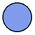

13 Miscellaneous
函数
(hyperlinkize pict) → pict?
pict : pict-convertible?
Adds an underline and blue color. The pict’s height and
descent are extended.
例如：
> (hyperlinkize (text "Help me I'm trapped in this documentation" null 15))
函数
(scale-color factor color) → (is-a?/c color%)
factor : real? color : (or/c string (is-a?/c color%))
Scales a color, making it brighter or darker. If the factor is less
than 1, the color is darkened by multiplying the RGB components by the
factor. If the factor is greater than 1, the color is lightened by
dividing the gap between the RGB components and 255 by the factor.
例如：
> (disk 30 #:color "royalblue") > (disk 30 #:color (scale-color 0.5 "royalblue")) > (disk 30 #:color (scale-color 1.5 "royalblue")) 
函数
(color-series dc max-step step-delta start end proc set-pen? set-brush?) → void? dc : (is-a?/c dc<%>) max-step : exact-nonnegative-integer? step-delta : (and/c exact? positive?) start : (or/c string? (is-a?/c color%)) end : (or/c string? (is-a?/c color%)) proc : (exact? . -> . any) set-pen? : any/c set-brush? : any/c
Calls a proc multiple times, gradually changing the pen
and/or brush color for each call. For the first call, the current pen
and/or brush color matches start; for the last call, it
matches end; and for intermediate calls, the color is an
intermediate color.
The max-step and step-delta arguments should be exact numbers; the procedure is called with each number from 0 to max-step inclusive using a step-delta increment.